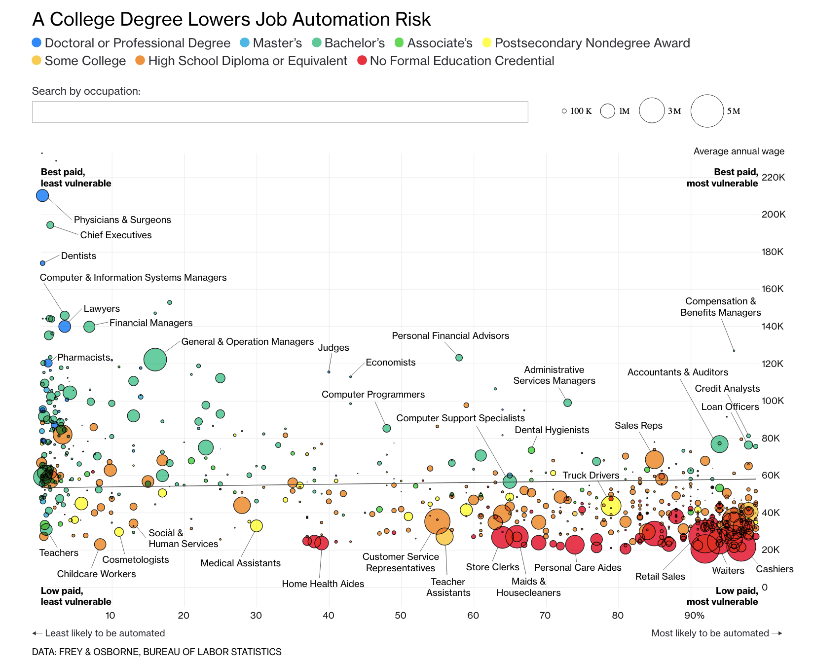

Tidy Tuesday: Replication
This weeks’s installment of Tidy Tuesday is all about replicating professional plots in R. Inspired by Rafael Irizarry’s post “You can replicate almost any plot with R”, the goal is to take otherwise professional publication-ready plots and make them in R (usually ggplot2).
I was interested in this Tidy Tuesday because some of my past work has been dedicated to creating publication-ready plots. Because the first visualization I ever created was inspired by (a replication of?) this visualization from Bloomberg graphics, I decided to set out on a journey to make that plot as close as possible to the real thing.

The real goal of this week’s Tidy Tuesday is using the data that Rafael posted to create other cool visualizations; I took a slightly different approach to try to recreate another visualization entirely. What follows is an interactive recreation of the visualization above, using Shiny and plotly.
library(ggplot2)
library(ggthemes)
library(dplyr)
library(ggrepel)
library(tools)
library(readxl)
library(tidyverse)
library(knitr)
library(shiny)
library(plotly)
theme_set(theme_minimal())Load and Clean Data
First, we read in the data. This process was a bit complicated as I kind of had to guess where Bloomberg pulled their data from.
I relied on three datasets:
Educational attainment broke down by occupation, provided by BLS here
Salaries, median hourly/annual wages broke down by occupation, provided by BLS here
Risk of automation broken down by occupation, provided by Carl Benedikt Frey and Michael A. Osborne (but compiled here)
education <- read_excel("data/education.xlsx", skip=1)
salary <- read_excel("data/national_M2017_dl.xlsx")
automation <- read_excel("data/raw_state_automation_data.xlsx")In another post, I detail the data cleaning process. I’ll spare you the details here.
Create the UI
Now we create the UI, as is the case for any Shiny app. This is pretty simple: first, we add the title panel and beautify it with some CSS.
ui <- fluidPage(
titlePanel(
h1("A College Degree Lowers Job Automation Risk",
style = "font-family: 'Helvetica Neue';
font-size: 20px; font-weight: 400; line-height: 1.1;"),
windowTitle = "Find Out If Your Job Will Be Automated"
),Next, we add the main panel, which includes a) the plot object, b) the footnote, and c) some CSS.
mainPanel(
fluidRow(
div(
plotlyOutput("plot", height = '600px', width = '850px')
),align="left"),
p("DATA: FREY & OSBORNE, BUREAU OF LABOR STATISTICS",
style = "font-family: 'Helvetica Neue';
font-size: 8px; font-weight: 500; line-height: 1.1;")
)
)That’s it!
Server
Now we can define the server() function, where the real magic of this visualization happens.
All of the following takes place in the server <- function(input, output, session) {} function.
Create a ggplot Object
We know we’re going to need a ggplot object. In my case, we’ll need a plot object which relies on probability, median income, and risk of automation.
ggplot(aes(x=probability, y=A_MEDIAN, size=TOT_EMP, fill=typicaled, text = text)) +
geom_point(color = "black", alpha = .97, stroke = .1) +
scale_size(range = c(1, 10), guide = 'legend')This creates the base of the object.
Add a Tooltip
We also know that, like the Bloomberg visualization we’re replicating, we’re going to want a tooltip.
That’s why we included text in the above code, which we define here:
data %>%
mutate(text = glue::glue('<span style="font-size:16px;font-weight:bold">{data$occupation}</span>',
'\n<b>Number employed:</b> {scales::comma(data$TOT_EMP)}',
'\n<b>Computerization prob:</b> {data$probability}%',
'\n<b>Education:</b> {data$typicaled}',
sep = "\n"))This tooltip takes in some CSS, some HTML, and creates a pretty tooltip! The glue function is lovely.
Axes and Labels
The Bloomberg visualization is unique in that it has no axis lines. We can replicate that in ggplot2 via the following code:
theme(axis.line.x = ggplot2::element_blank(),
axis.line.y = ggplot2::element_blank(),
axis.text = element_text(colour = "black", size = 8))But that’s not all!
The Bloomberg visualization is also unique in that it doesn’t have axis titles. Moreover, the axis labels are a bit unique; the x axis increases sequentially by 10 until 90 where it transitions into ‘90%’ (the % is not present in the earlier numbers).
We can mimic that kind of styling with this code:
xlab("") +
ylab("") +
labs(size= "", alpha = "", fill = "") +
scale_y_continuous(limits = c(-1000,240000),
breaks = c(20000, 40000, 60000, 80000, 100000, 120000, 140000, 160000, 180000, 200000, 220000),
labels = c("20K", "40K", "60K", "80K", "100K", "120K", "140K", "160K", "180K", "200K", "220K")) +
scale_x_continuous(limits = c(0,100),
breaks = c(10,20,30,40,50,60,70,80,90),
labels = c(10,20,30,40,50,60,70,80,"90%"))We create a bit of a buffer on the limits argument so that we can add annotations. We’ll get to that later!
Colors
To get as close as possible to Bloomberg’s plot, I’d also like to mimic their color scheme. I pulled the colors from their dotplot with this awesome Chrome plugin; then, I added them to R with the following:
cols <- c('No formal educational credential' = '#FA1A48','High school diploma or equivalent' = '#F79734',
"Postsecondary nondegree award" = '#FDFF1C', "Associate's degree" = '#1DDF50',
"Bachelor's degree" = '#34D19D', "Master's degree" = '#1BC0E9',
"Doctoral or professional degree" = '#1B91FF') In the plot object, we reference this with the following:
scale_fill_manual(values = cols, labels = c('No formal educational credential', 'High school diploma or equivalent', "Some college, no degree",
"Associate's degree", "Postsecondary nondegree award",
"Bachelor's degree", "Master's degree",
"Doctoral or professional degree"))This essentially creates a fill scale (manually) with specified hex codes for colors. I also tried to manipulate the order of the legend but that didn’t translate to plotly (a documented problem, I believe).
Final Touches for the ggplot
Finally, we do something really hacky: add a regression line with geom_segment. (I’m so sorry, R gods.)
geom_segment(aes(x = 0, y = 54000, xend = 100, yend = 58000), size = .1) We now have the ggplot object created; let’s convert it to a plotly object.
Create a plotly Object
This process relies on the ggplotly function, which reads in a previously defined ggplot object and converts into an interactive plotly one.
introPlot <- ggplotly(introggPlot, tooltip = 'text', sort = FALSE)After creating the base plotly object, we move to some more complicated steps:
Legend Orientation
We’d like the legend to orient horizontally, right above the plot. We do that with the following (inside the layout function):
legend = list(orientation = "h",
xanchor = "left",
x = 0, y = 100,
traceorder = "normal",
itemsizing = "constant",
tracegroupgap = 0,
font = list(size = 13))This does a few things. First, it orients the legend horizontally. Second, it anchors the legend to the left. Third, it defines the location (using x-y pairs) of the legend. traceorder is meant to maintain the previous order from ggplot, but that didn’t work in my version. itemsizing is meant to keep the legend items with a constant size, as opposed to dynamic relative to the plot objects themselves. This also didn’t work. The last two arguments define the spacing between points and the font size of the legend text!
Axes Revisited
We also see the Bloomberg viz has a right-aligned Y-axis. We can add that to plotly via the following code:
yaxis = list(
tickfont = element_blank(),
overlaying = "y",
side = "right",
title = ""
)Some Aesthetic Changes
Finally, we add three commands to the layout function.
font = list(family = 'Helvetica Neue',
color = "black"),
margin = list(r=1, l=1,t=1,b=1,pad = 0),
hoverlabel = list(bgcolor = 'white', color = 'black')This a) changes the font of the plot, b) adds a small margin, and c) stylizes the tooltip on hover.
Annotations
The last step is to mimic Bloomberg’s annotations. This is a little tough, specifically because it requires pretty specific x- and y-values.
First, we’ll add their guiding annotations (that replace axis labels) that you can find in each corner:
add_annotations(
x = 1, y = 7500,
xref = "x",
yref = "y",
text = "<b>Low paid,\nleast vulnerable</b>",
xanchor = 'center',
align = 'left',
font = list(size = 10),
showarrow = F
) %>%
add_annotations(
x = 100, y = 7500,
xref = "x",
yref = "y",
text = "<b>Low paid,\nmost vulnerable</b>",
xanchor = 'center',
align = 'right',
font = list(size = 10),
showarrow = F
) %>%
add_annotations(
x = 1, y = 230000,
xref = "x",
yref = "y",
text = "<b>Best paid,\nleast vulnerable</b>",
xanchor = 'center',
align = 'left',
font = list(size = 10),
showarrow = F
) %>%
add_annotations(
x = 100, y = 230000,
xref = "x",
yref = "y",
text = "<b>Best paid,\nmost vulnerable</b>",
xanchor = 'center',
align = 'right',
font = list(size = 10),
showarrow = F
)Next, we add annotations for ‘most and least likely to be automated’, as well as the y axis label.
add_annotations(
x = -5, y = -5000,
xref = "x",
yref = "y",
text = glue::glue(sprintf('\u2190'), "Least likely to be automated"),
xanchor = 'left',
align = 'left',
font = list(size = 10),
showarrow = F
) %>%
add_annotations(
x = 105, y = -5000,
xref = "x",
yref = "y",
text = glue::glue("Most likely to be automated", sprintf('\u2192')),
xanchor = 'right',
align = 'right',
font = list(size = 10),
showarrow = F
) %>%
add_annotations(
x = 99, y = 243000,
xref = "x",
yref = "y",
text = "Average annual wage",
xanchor = 'center',
align = 'right',
font = list(size = 10),
showarrow = F
)And finally, add a couple of plot annotations which label specific points. (We are not labelling a hundred occupations like Bloomberg did.)
add_annotations(
x = subset(data$probability, data$occupation == "Chief Executives"),
y = subset(data$A_MEDIAN, data$occupation == "Chief Executives"),
text = "Chief Executives",
xref = "x",
yref = "y",
xanchor = 'center',
align = 'right',
font = list(size = 10),
showarrow = TRUE,
arrowhead = 0,
ax = 50,
ay = 25
) %>%
add_annotations(
x = subset(data$probability, data$occupation == "Cashiers"),
y = subset(data$A_MEDIAN, data$occupation == "Cashiers"),
text = "Cashiers",
xref = "x",
yref = "y",
xanchor = 'center',
align = 'right',
font = list(size = 10),
showarrow = TRUE,
arrowhead = 0,
ax = 40,
ay = -50
)Finalize the plotly object with
config(displaylogo = F, showSendToCloud = F, displayModeBar = F)We’re done! Run the application with the following code:
shinyApp(ui = ui, server = server)And we’re done! Find my interactive visualization here. Find the code, uninterrupted and (hopefully) reproducible, here.
Here’s the Bloomberg visualization:
And here’s mine:

Connor Rothschild
Undergraduate at Rice University
I’m a senior at Rice University interested in public policy, data science and their intersection. I’m most passionate about translating complex data into informative and entertaining visualizations.